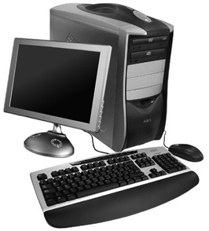
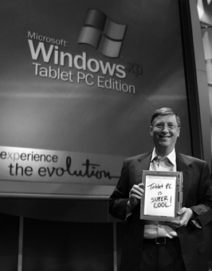

Iniciativa emprenedora
La societat d’avui dia necessita noves idees per poder desenvolupar reptes que tenim en el món actual. Les noves idees que sorgeixen han de ser reconduïdes per persones o grups que tenen un caràcter emprenedor i poden portar a terme els reptes de la innovació. Aquests emprenedors tenen com una de les seves característiques més destacades la iniciativa.
Existeix una gran relació entre emprenedor i innovació, fins al punt que alguns teòrics no conceben l’emprenedoria sense innovar, ja que una de las característiques fonamentals de l’emprenedor és l’aplicació de canvis en les idees, els valors i els procediments de l’activitat econòmica per solucionar els problemes que es presenten en la satisfacció de necessitats.
La innovació i desenvolupament econòmic
- Una innovació cabdal per a la nostra societat.
La innovació i el desenvolupament econòmic van de la mà ja que totes les idees noves que entren en el món empresarial ajuden a fer que el teixit empresarial d’una societat estigui més desenvolupat.
La innovació és un procés creatiu que comença amb un descobriment i acaba amb la confecció d’un producte o la realització d’un servei.
La innovació pot sorgir en qualsevol lloc de l’organització i pot arribar de manera espontània o ser fruit d’una planificació. I sorgeix sempre que hi ha una necessitat que fa pressió per alguna cosa i es crea un nou producte o procés d’un valor afegit major.
Es considera innovació el descobriment de nous coneixements i el desenvolupament de noves aplicacions tecnològiques.
Tipus d'innovació
Segons els criteris utilitzats, podem fer diferents tipus de classificació de la innovació. Fonamentalment s’utilitzen dos criteris. En primer lloc, el criteri de les característiques tècniques de la innovació. Segons aquest criteri es poden distingir dos tipus d’innovació:
- Innovació radical: Consisteix a desenvolupar un producte o procés nous que no es coneixien abans.
- Innovació incremental: Consisteix a afegir valor a productes o processos ja existents que respecten el més important del producte o procés i li apliquen canvis per millorar-lo.
Un altre criteri de classificació de la innovació és en funció d’on s’apliqui:
I + R + I
Al concepte d’investigació i recerca per crear nous negocis hem d’afegir, en l ‘actualitat, la iniciativa que consisteix en el fet de poder posar a la pràctica allò que s’ha creat.
- Innovació en el producte: és aquella innovació que se centra en les característiques del propi producte o en els elements materials que en faciliten la manipulació.
- Innovació en el procés: és aquella innovació que s’encamina cap a la realització de la gestió empresarial. En aquest cas, la innovació ha de ser rendible.
- Innovació en màrqueting i disseny: consisteix en l’aplicació d’un nou mètode de comercialització que impliqui canvis significatius de disseny, posicionament en el mercat, promoció o preu d’un bé o un servei. Es tracta d’incorporar la visió del mercat i hi inclouríem les innovacions respecte del preu, la promoció i la distribució.
- Innovació en tecnologia: la innovació tecnològica s’ha d’entendre com l’aplicació industrial del coneixement. Es pot donar en qualsevol sector empresarial i inclou la innovació derivada de la recerca i el desenvolupament tecnològic, que són independents de les iniciatives innovadores de procés i producte.
En la innovació en màrqueting i disseny moltes vegades es tracta de millorar el coneixement i les relacions amb el client i el mercat.
Aquesta innovació opera des d’una perspectiva a més llarg termini i se centra en l’exploració constant de noves eines que després seran concretades amb el desenvolupament d’un producte o servei.
Els parcs científics i tecnològics tenen una gran importància com a generadors d’innovació.
- Innovació en l’organització: Consisteix a utilitzar dones i homes que actuïn com a motor, és a dir, amb certes característiques personals necessàries per dur a terme aquests projectes.
Innovació i TIC
- 
- Un avanç tecnològic que ha revolucionat el segle XX.
Les TIC o tecnologies de la informació i la comunicació tenen una influèn- cia cada vegada més gran en les empreses actuals i això dóna lloc a més possibilitats d’informació i d’innovació en el món empresarial.
Les TIC més importants i que s’apliquen de manera habitual en el món empresarial són les següents:
- La informàtica: Els equips (hardware) i els programes (software) són essencials en la vida d’una empresa. Qualsevol empresa, ja sigui multinacional o una microempresa, utilitza la informàtica ja que el seu ús estalvia temps i diners i els programes adequats a cada empresa les fa més competitives envers la competència.
- Internet: És una tecnologia que posa al nostre abast tota la informació que podem demanar sobre qualsevol tema. La seva utilització genera el problema de seleccionar la informació rellevant per a l’empresa; per la qual cosa les empreses, moltes vegades, contracten serveis de selecció d’informació.
- Correu electrònic: Actualment és un mitjà de relació per a l’empresa, cap a l’exterior per tenir una comunicació més àgil amb els nostres clients o proveïdors, com també respecte a la comunicació interna entre els treballadors de l’empresa.
- Certificats d’usuaris i signatures digitals: Els tràmits més usuals que fan les empreses es fan a través de la via telemàtica i, per això, és necessari que les empreses tinguin signatures digitals emeses per organismes especialitzats.
- Comerç electrònic: Per a les empreses, el comerç electrònic és un mitjà de distribució directa cap als seus clients mitjançant una pàgina web on aquests poden fer la seva comanda i, posteriorment, pagar-la amb una targeta de crèdit.
El comerç electrònic
És un canal de distribució amb poc cost i que permet obtenir un benefici major a l’empresa; però el seu ús no està generalitzat entre els clients.
Factors claus dels emprenedors
La persona emprenedora és una figura de vital importància per a l’empresa i el seu èxit. Sense persones emprenedores el teixit empresarial de la nostra societat no tiraria endavant.
- 
- Bill Gates, cofundador de l'empresa Microsoft, és una persona que transmet energia per fer una tasca empresarial.
L’emprenedor és aquella persona que, aplicant les seves capacitats, converteix una idea en un projecte econòmic concret, ja sigui en una empresa o en una organització social, i que genera algun tipus d’innovació i beneficis econòmics i socials.
De la definició d’emprenedor convé aclarir algunes idees:
- Projecte econòmic: és el conjunt de polítiques i estratègies econòmi- ques que porten a aconseguir objectius econòmics i socials.
- Oportunitat de negoci: la idea de l’emprenedor es genera en l’empresa amb ànim de lucre.
- Beneficis socials: la idea de l’emprenedor es desenvolupa en una organització social amb l’objectiu d’aconseguir major benestar en les persones.
- Innovació: aplicació de noves idees i conceptes que han ser útils per augmentar la productivitat, tant en la generació de productes com en la satisfacció de necessitats.
Algunes de les qualitats que hauria de tenir d’un bon emprenedor o emprenedora són:
- Persones que treballen amb les qualitats d'un bon emprenedor.
- Capacitat per prendre decisions i assumir riscos: L’emprenedor ha de ser conscient en cada moment d’allò que vol fer i, per això, ha de saber en tot moment quins riscos assumeix i tenir la capacitat d’assumir-los.
- Creativitat i afany d’innovació: Han de ser persones que tinguin idees interessants i trobin noves solucions a problemes plantejats.
- Confiança en si mateix: L’emprenedor ha d’estar convençut que tindrà èxit i ha d’estar motivat.
- Sentit pràctic: Ha de fer les coses sense donar-hi gaires voltes i aprofitant al màxim el temps i els recursos que té.
- Organització: En qualsevol activitat empresarial és necessari l’ordre i la coherència.
- Facilitat per a les relacions personals: Un emprenedor mai no està sol. S’envolta de persones competents i té relació amb persones que el puguin portar a l’èxit.
- Constància: L’èxit no és immediat i s’ha de tenir paciència i la capacitat suficient per mantenir-se fins a aconseguir-ho.
Proactivitat
Capacitat d’avançar-se als problemes i prendre les mesures per afrontar-los de manera positiva i provocar el canvi desitjable.
Algunes de les característiques personals desitjables d’una persona emprenedora són les següents:
- Independència: Qualitat de no dependre d’una altra persona. S’ha d’entendre com a enteresa, fermesa de caràcter.
- Intuïció: Facultat d’entendre les coses al moment, sense necessitat de raonament.
- Empatia: Identificació mental i afectiva d’una persona amb l’estat d’ànim d’un altre.
- Responsabilitat: Capacitat de tota persona de respondre davant les seves accions, activitats, idees, pensaments, etc.
- Curiositat: Desig de saber, comprendre, investigar i conèixer.
- Perseverança: Mantenir-se constant, tornar-ho a provar.
- Autocontrol: Control dels propis impulsos i reaccions.
- Motivació: Tenir l’ànim de fer les coses, la voluntat i la força.
La persona emprenedora és una persona que disposa de característiques personals diferenciades, d’actituds que li fan veure la vida com un procés que ella dirigeix.
Les qualitats d’un emprenedor es poden agrupar en les categories següents:
1) Iniciativa.
La iniciativa porta les persones a dur a terme accions, a fer propostes, a ésser actives davant les situacions.
La persona amb iniciativa tracta de realitzar de manera continuada el seu treball amb:
- Ganes de fer coses, és a dir, motivació.
- Responsabilitat sobre allò que decideix fer.
- Desig d’independència en les seves opinions i decisions.
- Capacitat de voler millorar contínuament.
- Laboriositat.
- Perseverança.
- Capacitat d’assumir riscos.
2) Creativitat
La creativitat dóna a les persones la capacitat de generar idees, de mostrar noves visions i noves interpretacions del món que ens envolta.
La persona amb creativitat mostra de manera continuada:
- Tenir idees.
- Voler trobar idees noves i bones.
- Capacitat per identificar oportunitats on els altres veuen problemes.
- Intuïció.
- Capacitat de veure el món des d’una perspectiva diferent.
3) Curiositat
La curiositat és la capacitat de voler conèixer, d’aprendre i d’esbrinar tot el possible sobre les coses i els fets que ens envolten.
La persona amb curiositat mostra de manera continuada:
- Ganes d’aprendre per plaer.
- Capacitat d’aprendre de les experiències i de millorar els seus coneixements.
4) Lideratge empresarial
El lideratge empresarial es defineix com la capacitat de fer que les persones de l’equip del líder treballin motivades.
Qualitats del líder
Un líder ha de tenir:
- Bona capacitat de comunicació
- Capacitat de treball en equip
- Orientació cap als col·laboradors
- Coherència
- Integritat
La persona amb lideratge empresarial mostra de manera continuada:
- Capacitat directiva.
- Tolerància a l’ambigüitat i a la incertesa.
- Capacitat d’empatitzar amb els altres, de posar-se a la pell dels altres i de projectar les seves actituds cap a altres persones.
5) Formació
En l’actualitat és impensable que una persona sense formació pugui triomfar en el món empresarial. En el món actual es requereix una capacitació que prové de la formació acadèmica i de l’experiència professional.
La formació acadèmica i la formació professional inclouen l’estudi de les habilitats socials i dels coneixements tècnics com s’aprecia en la figura.
Actuació dels emprenedors com a empleats
Habitualment s’assòcia la figura de l’emprenedor amb aquella persona que inicia un negoci per compte propi; però la iniciativa emprenedora també es pot aplicar a aquelles persones que treballen com a assalariades per a una empresa.
En les grans empreses, les activitats emprenedores corresponen no únicament a l’equip directiu, sinó també als treballadors i treballadores sense persones al seu càrrec. Aquesta figura s’anomena emprenedor corporatiu o intraprenedor o intrapreneur.
Classificació de tipus d'emprenedors
-

- Reunió de treball
L’autonomia de l’emprenedor es pot agafar com a criteri de classificació dels emprenedors. Segons aquesta classificació, podem trobar dos tipus d’emprenedors.
- Intraprenedor (intrapreneur): És l’emprenedor dependent, ja que aplica les innovacions en una empresa de la qual ell no és titular. Són els directius i treballadors de grans empreses i alts funcionaris de l’Administració. En la figura podem veure els objectius de l’intrapreneur.
Tipus d'entreprenedor segons la motivació
Són els següents:
- Econòmic: obtenir el major benefici.
- Social: procurar la millora de condicions de vida dels altres.
- Tecnològic: desenvolupar innovacions de producte o procés.
- Polític: autorealitzar-se.
- Entreprenenedor (entrepreneur): És l’emprenedor independent que aplica les innovacions a la creació de la seva pròpia empresa o a la seva millora. És l’empresari.
Els que pertanyen al tipus entreprenedor es poden classificar, en funció dels objectius que volen assolir, en:
- Entreprenedor artesà: aquell emprenedor que vol ser el seu propi empresari desenvolupant la professió a la seva manera sense tenir aspiracions de creixement empresarial ni domini de mercat.
- Entreprenedor familiar: igual que el primer, vol desenvolupar la seva professió però espera que aquesta continuï amb els seus descendents.
- Entreprenedor administrador: vol arribar a crear empreses que durin i poder dirigir molta gent.
- Entreprenedor oportunista: vol descobrir noves oportunitats de negoci que generin el màxim benefici amb el mínim temps.
L’intraprenedor o entreprenedor corporatiu és l’empleat que actua amb iniciativa i autonomia per aconseguir els objectius de l’empresa on treballa.
Instruments per identificar les capacitats que afavoreixen l'esperit emprenedor
Anàlisis complementàries de capacitats
Són les següents:
- Els interessos a través dels gustos personals.
- Les expectatives a través dels objectius personals a curt, mitjà i llarg termini.
- La disposició d’una persona a través de la preparació i la formació i la intenció per esforçar-se.
- La situació familiar a través de l’estabilitat, les necessitats i els suports.
Cada persona té una imatge d’ella mateixa i també els altres tenen una imatge de nosaltres que necessàriament no han de coincidir.
Per saber identificar les nostres capacitats emprenedores s’ha de fer una anàlisi de les pròpies capacitats i expectatives com es veu en la figura. Aquesta anàlisi es pot dur a terme amb instruments diversos i depèn de les diferents capacitats que es vulguin analitzar.
Una vegada s’ha fet l’anàlisi per trobar les capacitats emprenedores d’una persona redactarem un projecte emprenedor.
El projecte emprenedor és la definició d’un pla personal que persegueix aconseguir objectius empresarials mitjançant la planificació i el desenvolupament d’un pla d’empresa.
Les bones pràctiques empresarials
L’objectiu fonamental d’un empresari és aconseguir beneficis econòmics per a la seva empresa. Totes les característiques personals i professionals de l’empresari que estudiem i la convivència del risc amb aquest empresari es fa des del punt de vista dels beneficis econòmics.
En la secció “Annexos” del web trobareu una guia per a les bones pràctiques empresarials.
L’obtenció de beneficis econòmics es pot fer com sigui? Podem utilitzar els nostres empleats de qualsevol manera per aconseguir els objectius de l’empresa i guanyar molts diners? Pensem que en el món actual aquesta idea seria factible perquè existeix una noció de competitivitat ferotge que fa que totes les actuacions dels emprenedors vagin per aquest camí.
Però l’emprenedor no pot tenir aquesta actuació; és tan important obtenir beneficis per a l’empresa com la manera d’obtenir-los. Per això, l’empresari ha d’actuar sota el principi de les bones pràctiques empresarials i aplicar els principis de l’ètica empresarial.
Les bones pràctiques empresarials suposen la realització, per part d’una empresa, d’actuacions que siguin coherents amb els principis ètics que té marcats i que portin a l’aplicació efectiva d’aquests principis ètics.
Les bones pràctiques empresarials portaran a terme l’aplicació pràctica del conjunt de valors, normes i principis que formen l’ètica empresarial i que permetran assolir amb la societat que els envolta una complicitat i una adaptació a tots els entorns respectant els valors i els drets reconeguts per la societat a la qual s’adrecen.
La tinença per part de les empreses d’un codi ètic de conducta, és a dir, d’una declaració formal dels valors i les pràctiques comercials d’una empresa on s’enuncien normes mínimes i el compromís de l’empresa a complir-les ens donarà una guia de quines són les bones pràctiques empresarials que l’empresa portarà a terme o, fins i tot, que obligarà a portar-la a terme en el seu entorn.
L'empresari: actituds i requisits per a l'exercici de l'activitat empresarial
Qualsevol persona no pot arribar a ser empresari ja que l’empresari té unes característiques pròpies i específiques. L’empresari és el promotor de qualsevol projecte emprenedor que es duu a terme.
Es poden analitzar dos conceptes d’empresari:
- El concepte econòmic: L’empresari és aquella persona que organitza, gestiona i assumeix el risc que implica la posada en marxa d’un projecte d’emprenedoria i que administra de manera eficaç, combinant els recursos humans, físics, productius, tecnològics i financers d’una organització, amb la finalitat de generar beneficis.
- El concepte jurídic: És una persona, física o jurídica que, per ella mateixa o per mediació dels seus representants, exercita i desenvolupa una activitat empresarial, en nom propi i de manera habitual, i adquireix la titularitat de les obligacions i dels drets que es deriven de l’activitat.
- Persona que ha creat el seu negoci.
Si analitzem aquests dos conceptes podem deduir els trets que defineixen a l’empresari. Aquests trets són:
- Assumeix riscos.
- Administra béns.
- Organitza persones.
- Té personalitat jurídica.
- És objecte de drets i obligacions.
- Busca beneficis.
- La seva dedicació és habitual i permanent.
En la taula es poden veure les característiques principals que defineixen l’empresari.
| Personals | Claredat en els objectius. Capacitat de lideratge en l’organització i delegació de funcions. Iniciativa i creativitat. Dinamisme en la presa de decisions. Facilitat per les relacions personals i interpersonals. Independència. Confiança en ell mateix. Ambició per aconseguir els objectius. Equilibri emocional. Responsabilitat i compromís. |
| Professionals | Formació tècnica en el sector. Formació empresarial suficient en el sector. Experiència professional prèvia. Utilització d’eines informàtiques de comunicació. |
Objectius personals enfront d'objectius empresarials: missió, visió i valors d'empresa
Els objectius d’un emprenedor han d’anar coordinats amb els objectius empresarials ja que, si no existís aquesta coordinació, seria contraproduent per a l’empresa que l’empresari volgués aconseguir els seus objectius personals.
Missió de l'empresa
La missió representa la identitat i la personalitat de l’empresa en l’actualitat i en la seva projecció de futur i respon a la pregunta següent: com és l’empresa i quina és la voluntat de desenvolupar-la?
Elements que caracteritzen la missió de l'empresa
Els elements que caracteritzen la missió de l’empresa es poden agrupar en diferents tipologies segons l’element més important que es prengui com a referent.
- Variables a les quals es refereix
- El camp d’activitat: sector econòmic en què opera; mercat sobre el qual treballa i productes i serveis que formen la seva oferta comercial.
- Capacitats: recursos organitzatius i estratègics que té l’empresa i que els proporciona l’avantatge sobre les altres empreses.
- Funcions
- Defineix una identitat corporativa clara que ajuda a formar la personalitat i el caràcter de l’organització.
- Identifica els clients potencials i es defineix el propòsit estratègic per a la seva satisfacció.
- Aporta estabilitat i coherència en les operacions fetes i credibilitat en els mercats en què es troba.
- Permet als agents externs conèixer les àrees de l’empresa.
- Defineix les oportunitats que es presenten davant una possible diversificació d’activitats, productes, etc.
- Tipus
- Missió àmplia: contempla un nombre important de factors en la seva definició i permet una major llibertat en el desenvolupament empresarial.
- Missió estricta: preveu pocs factors en la seva definició i permet un grau de control important en la seva aplicació i desenvolupament.
- Condicions d’efectivitat de la missió
- Formulació a llarg termini.
- Compromís total per part de la direcció, en la seva definició i desenvolupament.
- Ha de ser creïble en el plantejament i realista a l’hora de realitzar-la.
- Ha de ser assumida per tots els membres de l’organització.
- La seva presència és necessària en tot moment.
La missió és el propòsit central pel qual es crea l’empresa.
Visió de l'empresa
Un element que té transcendència en la cultura de l’empresa i que és la guia de la iniciativa i l’essència del negoci és la visió de l’empresa.
La visió de l’empresa fa referència a allò que l’empresa vol ser.
La concreció de la visió de l’empresa es fa a través de la definició del propòsit estratègic que presenta tres característiques bàsiques:
- Planteja la idea d’èxit del negoci que s’està portant a terme.
- Es manté estable en els anys: és l’origen i marca el camí que s’ha de seguir fins al final.
- Ha de ser capaç de generar el compromís de tots els membres de l’organització.
La visió de l’empresa compleix les funcions següents:
La visió de l’empresa n’estableix el propòsit estratègic.
- Augmenta la motivació i l’entusiasme de tots els components de l’organització.
- Desenvolupa l’esperit competitiu de l’organització fent participar totes les persones dels objectius empresarials.
- Estableix punts clau de control i valoració de l’activitat empresarial i, a partir d’aquests, fixa els camins a seguir.
Els valors de l'empresa
Els valors representen la ideologia de l’empresa i han de ser assumits i desenvolupats per tot el personal i, especialment, pels directius.
Els valors de l’empresa són els judicis ètics sobre les diferents situacions de la vida social, que són generalment acceptats com a bons per la immensa majoria dels individus que formen la societat.
Acceptar i desenvolupar els valors genera actituds positives i la normalització social d’aquestes actituds positives dóna lloc a les normes de convivència.
Les característiques bàsiques dels valors de l’empresa:
- Són majoritàriament acceptats.
- Es desenvolupen en totes les situacions de la vida individual i social.
- Són dinàmics.
- Són necessaris per al desenvolupament d’una convivència pacífica i de millora social.
- No poden ser un simple enunciat ètic sense aplicació pràctica.
Les funcions que compleixen els valors de l’empresa:
La importància dels valors per a l'empresa
La importància dels valors radica en la capacitat de generar les normes bàsiques d’una cultura compartida; és a dir, els valors defineixen la forma d’actuar de l’empresa que, al seu torn, ha d’estar determinada per l’estratègia a llarg termini (la missió i la visió de l’empresa).
- Indiquen quin és el sistema d’organització més adequat a la cultura de l’empresa.
- Representen el suport ètic de la missió i visió de l’empresa.
- Enforteixen el compromís dels directius de l’empresa amb els objectius estratègics plantejats.
- Promouen la formació contínua dels treballadors de l’empresa i un sistema de motivació laboral equitatiu i transparent.
- Ajuden a assumir la responsabilitat social de l’empresa.
La incorporació dels valors a l'empresa
Per a la incorporació dels valors a l’empresa es requereix un procés de reflexió i actuació dels fundadors i directius que ha de tenir l’esquema següent:
L’escala jeràrquica dels valors de l’empresa no és única sinó que depèn del tipus d’empresa i dels seus objectius.
1) Establir els valors fonamentals de l’empresa : Allò realment important és determinar els valors que podem trobar, de manera general, en la Declaració Universal de Drets Humans de 1948.
Els valors fonamentals de l’empresa, els podem resumir en els següents: respecte, responsabilitat, solidaritat, tolerància i llibertat. A aquests valors fonamentals podem afegir els valors intrínsecament econòmics: eficiència, rendibilitat i sostenibilitat.
2) Definir l’escala de valors : Una vegada tenim clars quins són els valors de l’empresa, els hem de situar en una escala jeràrquica perquè no es produeixin conflictes i, si n’hi ha, se solucionen aplicant el valor més important o preponderant per a l’empresa.
3) Comunicar els valors a tots els membres de l’empresa : això es fa perquè tots els membres de l’empresa siguin conscients de la seva preponderància i situació.
4) Posar en pràctica un pla perquè les actituds de l’empresa, internes i externes, siguin coherents amb els valors definits.
5) Avaluar si les actituds que es generen a l’empresa estan d’acord amb els valors definits.
Els contravalors
A l’empresa poden existir contravalors, és a dir, actituds indesitjables per al desenvolupament social i empresarial. Aquests contravalors han de ser corregits pel bé de l’empresa i la societat.
Els valors i la seva jerarquia s’han de definir a llarg termini i les modificacions s’han de fer per una millora contínua.
Pla d'empresa i idea de negoci
La idea de negoci inicial no serà la definitiva ja que, durant la redacció del pla d’empresa, s’aniran fent canvis.
Els primers passos per iniciar el pla d’empresa consisteixen a definir una idea de negoci que serà el motor per a la creació de l’empresa. Juntament amb la identificació de la idea de negoci, s’identificaran els promotors i se n’especificaran les característiques bàsiques.
La idea de negoci en el pla d'empresa
Redacció de la idea de negoci
L’exposició ha de ser: breu, clara i directa. Per presentar davant tercers el pla d’empresa amb la finalitat d’obtenir finançament o ajudes.
Qualsevol pla d’empresa ha de començar amb una descripció de la idea que servirà de base per a l’empresa. No és necessari que aquesta descripció sigui molt llarga, només ha de donar resposta a les preguntes següents:
- Quina serà l’activitat de l’empresa?
- Per què s’ha escollit aquesta idea de negoci? Existeixen altres negocis similars? El producte o servei que s’ofereix és únic en aquest moment en el mercat? Quin és el motiu pel qual es pensa que tindrà èxit la idea del negoci? Què diferència aquest negoci d’altres de semblants?
- Quin és l’objectiu que vol aconseguir l’empresa?
- Quin serà el volum total de la inversió?
- Quin nom tindrà l’empresa?
Identificació de les idees de negoci
La detecció de les idees de negoci poden venir de fonts molt diverses ja que les oportunitats que donen lloc a aquestes idees de negoci poden sorgir tant d’una nova invenció com d’interès personal, entre altres (taula).
| Fonts | Explicació |
|---|---|
| La invenció i innovació | El fet d’explotar comercialment una patent és un factor fonamental per tenir èxit en un mercat. |
| L’observació d’una carència o deficiència | Quan existeixen necessitats no cobertes neix la necessitat de donar cobertura a aquestes necessitats i sorgeixen nous clients. |
| La formació acadèmica dels emprenedors | Una formació acadèmica diferencial dels emprenedors donarà lloc a un plus de l’empresa. |
| L’experiència professional dels emprenedors | Els emprenedors tenen un bagatge professional que pot donar lloc a creació de noves idees perquè han vist, per la seva experiència, que és necessària aquesta idea de negoci. |
| Les aficions dels emprenedors | Quan es coneix una afició de manera detallada es coneixen totes les necessitats que poden portar a tenir idees de negoci. |
| El desenvolupament de noves tecnologies | És un tema d’actualitat que permet sempre tenir noves idees de negoci. |
| L’observació de noves tendències | Noves tendències que es produeixen a la societat suposen noves idees de negoci. |
| L’estudi de diferents mercats | Altres mercats ens poden donar idees de negoci que no es coneixien en una altra part per efecte de la globalització. |
Els serveis d'informació, orientació i assessorament. Els vivers d'empresa
Els emprenedors necessiten informació, orientació i assessorament quan estan realitzant la tasca d’emprenedoria. Existeixen molts organismes, tant públics, com privats o mixtos, que creen serveis i programes per fer el suport a l’emprenedoria.
Els organismes de suport als emprenedors es divideixen en:
- Institucions oficials i institucions empresarials.
- Els vivers d’empresa.
Institucions oficials i institucions empresarials
Les empreses a l’inici de la seva activitat, en els moments de crisi o si són petites i mitjanes, necessiten al llarg de la seva activitat d’ajudes de tot tipus: assessorament, suport, informació sobre el mercat, etc. Tal com mostra la taula, existeixen diverses institucions oficials i empresarials que donen aquesta ajuda a les empreses.
| Institucions | Funcions |
|---|---|
| Administració central de l’Estat | El Ministerio de Industria, Energia i Turismo disposa del canal emprenedor amb una important oferta de serveis per a la persona emprenedora i que vol iniciar un projecte emprenedor |
| Generalitat de Catalunya | La Xarxa Emprèn és una xarxa publico-privada d’entitats que, en el marc del programa Catalunya Emprèn de la Generalitat de Catalunya, presten serveis d’acompanyament i suport a les persones que volen constituir una empresa a Catalunya durant els tres primers anys de vida del negoci |
| Ajuntament de la vostra localitat | Dins de l’àmbit local es dóna un suport més directe als ciutadans emprenedors i hi ha projectes innovadors que han donat molt bons resultats. |
| Cambres de comerç | Les cambres de comerç donen instruments de suport a les empreses joves, manuals sobre fiscalitat, bones pràctiques empresarials, rendibilitat empresarial, finestreta única empresarial, etc. |
| Confederacions i associacions empresarials en l’àmbit estatal, autonòmic o local | Ofereixen cursos formatius, simuladors de gestió, ajudes per a l’elaboració de plans d’empresa, entre d’altres. |
Els vivers d'empreses
En els últims anys s’han anat creant organismes anomenats vivers d’empreses des dels quals els emprenedors poden començar a portar a terme la seva idea empresarial amb un suport en el món real.
Vivers d'empreses
En moltes ocasions, aquests centres estan vinculats a ajuntaments que tenen una relació més estreta i directa amb iniciatives emprenedores dels seus ciutadans.
Els vivers d’empreses són espais creats per acollir iniciatives empresarials que en facilitin la viabilitat en els primers mesos de la seva posada en marxa.
Les empreses que volen ser acollides en els vivers d’empreses han de presentar, com a norma general, un pla d’empresa que mostri la seva viabilitat econòmica perquè d’aquesta manera es veu que l’empresa a la qual s’ajuda pot tenir possibilitats de tirar endavant en el món empresarial.
Les empreses acollides a un viver d’empreses poden disposar, a baix cost i durant un temps prudencial per engegar la seva empresa, de molts dels serveis que s’esmenten a continuació:
- Despatxos i naus equipades amb el mobiliari bàsic.
- Totes les comunicacions necessàries per a l’empresa com són la central telefònica, el fax, la fotocopiadora, etc.
- Accés a l’ús d’ordinadors, impressores, escàners, etc.
- Servei d’internet i correu electrònic i l’accés a una pàgina web sense cap tipus de cost.
- Neteja dels locals.
- Utilització de personal tècnic i administratiu que posa el viver d’empreses sense necessitat de contractar-lo l’empresa.
- Seguiment i assessorament individualitzat de l’empresa per part de tècnics del viver d’empreses.
- Serveis de promoció de la iniciativa que fa el mateix viver d’empreses.